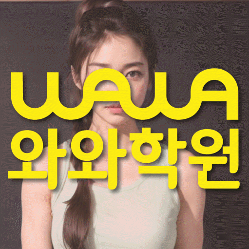

국어 수업 가능 학년
초1 · 초2 · 초3 · 초4 · 초5 · 초6 · 중1 · 중2 · 중3 · 고1 · 고2 · 고3
ACADEMIC SUPPORT LOCAL GUIDE
정평동 보습학원 선택 전 확인할 학생 유형, 현재 학년 학습 상태, 수업학교 자료 활용법, 클리닉수업 질문, 주소 기준 등하원 계획을 안내합니다.
30초 핵심 안내
정평동에서 보습학원을 찾는 학부모에게 먼저 드릴 답은, 성적 상승 약속보다 진단 근거와 관리 절차가 분명한지를 보라는 것입니다. 이번 페이지의 학생 유형은 강의 내용을 꼼꼼히 필기하지만 시험 범위를 늦게 정리하는 학생이며, 이 경우 평가 범위가 확인되는 즉시 단원별 할 일을 주간 계획으로 잘게 나누는 과정이 수업 계획에 실제로 들어가는지 확인해야 합니다. 클리닉수업 안내와 수업 장소 경북 경산시 대학로 23 월드스퀘어 302도 같은 기준으로 기록해 비교하면 선택 오류를 줄일 수 있습니다.
정평동은 수업 가능 생활권 기준입니다. 실제 방문 센터는 와와학습코칭센터 정평점이며, 주소와 등록 정보는 아래 센터 기준 정보에서 확인할 수 있습니다.
초1 · 초2 · 초3 · 초4 · 초5 · 초6 · 중1 · 중2 · 중3 · 고1 · 고2 · 고3
초1 · 초2 · 초3 · 초4 · 초5 · 초6 · 중1 · 중2 · 중3 · 고1 · 고2 · 고3
초1 · 초2 · 초3 · 초4 · 초5 · 초6 · 중1 · 중2 · 중3 · 고1 · 고2 · 고3



센터 기준 정보
센터명·주소·등록 정보와 교습비 확인 경로를 상담 전에 살펴볼 수 있도록 정리했습니다.
경상 경산시 정평동 상담 기준
경북 경산시 대학로 23 월드스퀘어 302
경산교육지원청 등록 제941호
실제 수업 가능 시간은 학년·과목별 일정에 따라 상담에서 확인합니다.
동네명은 수업 가능 지역을 찾기 위한 안내 기준입니다.
사월초
경산중 · 사동중 · 경산여중
경산고 · 사동고 · 경산여고 · 문경고
센터명·주소·등록번호·가능 학년·학교 참고 정보는 제공된 센터 자료를 기준으로 정리했으며, 실제 수업 범위와 일정은 상담에서 다시 확인합니다.
지역별 학습 안내
학생의 과목별 학습 상황과 상담 전에 확인할 기준을 여섯 가지 주제로 나누어 정리했습니다.
제공 자료에서 정평동 수업학교로 사월초, 경산중 등이 안내되어 있습니다. 정평동 학부모는 이 명칭만으로 특정 시험 일정이나 범위를 가정하지 말고 학생이 실제로 받은 안내 자료를 출발점으로 삼아야 합니다. 경상 경산시 정평동의 현재 학년 진도, 수행 과제, 이전 시험 오답과 남은 기간을 한 표에 넣으면 학교 대비와 누적 복습의 비중을 조정하기 쉽습니다. 정평동 페이지는 제공된 수업학교 외의 이름을 추가하지 않으며 다른 학교의 수업 가능 여부는 상담에서 확인하도록 안내합니다.
정평동 보습학원의 계획은 현재 학교 진도, 이전 단원의 빈틈과 다음 평가 준비를 한 줄에 섞지 않고 구분해야 합니다. 강의 내용을 꼼꼼히 필기하지만 시험 범위를 늦게 정리하는 학생에게는 평가 범위가 확인되는 즉시 단원별 할 일을 주간 계획으로 잘게 나누는 과정이 선행 확대보다 우선일 수 있습니다. 정평동에서는 현재 학년의 필수 개념을 확인한 뒤 학교 수업에서 바로 쓰일 내용과 장기적으로 보완할 내용을 별도 칸에 배치해야 학생도 공부 이유를 이해하기 쉽습니다. 경상 경산시 정평동의 시험 기간에는 범위 중심으로 비중을 조정하되 시험이 끝난 뒤 누적 오답과 취약 단원을 다시 계획에 넣어야 단기 대비가 일회성으로 끝나지 않습니다.
강의 내용을 꼼꼼히 필기하지만 시험 범위를 늦게 정리하는 학생은 “공부를 안 한다”는 한 문장으로 설명하기 어렵습니다. 정평동 상담에서는 정답률, 풀이 시작까지 걸리는 시간, 질문 빈도, 과제 미완료 이유를 나누어 확인해야 원인을 잘못 판단하지 않습니다. 정평동에서 우선 적용할 방법은 평가 범위가 확인되는 즉시 단원별 할 일을 주간 계획으로 잘게 나누는 과정입니다. 경상 경산시 정평동 학생은 현재 학년 내용을 자신의 말로 설명하고 비슷한 문제를 혼자 풀 수 있는지를 확인한 뒤 다음 진도를 정하는 편이 안전합니다.
“클리닉수업”은 시간대나 수업 이름만으로 적합성을 판단하기 어렵습니다. 정평동에서 클리닉수업을 확인할 때는 참여 인원, 질문 방식, 개별 풀이 확인, 과제와 오답 처리, 결석 시 대체 방법을 같은 순서로 비교하십시오. 정평동의 클리닉수업 관련 안내에서는 시험 범위 정리가 늦는 학생에게는 수업 형식보다 집중이 끊기거나 이해가 막혔을 때 교사가 어떻게 발견하고 개입하는지가 중요합니다. 정평동 학부모는 클리닉수업이 생활 일정과 맞는지뿐 아니라 수업 후 혼자 복습할 자료와 피드백이 남는지도 확인해야 합니다.
상담 준비의 출발점은 정평동 학생의 최근 자료와 생활 시간을 한 장에 정리하는 것입니다. 정평동에서 질문을 준비할 때는 최근 시험이나 확인 문제, 틀린 교재, 학교 과제, 공부 가능한 요일을 제시하고 시험 범위 정리가 늦는 문제를 교사가 어떻게 진단하는지 들어 보십시오. 경상 경산시 정평동 학부모가 비교할 때는 수업 방식, 반 편성, 결석·보강, 과제량, 오답 재확인, 학부모 연락과 비용 기준을 항목별로 적으면 설명을 감정이 아니라 정보로 비교할 수 있습니다. 정평동에서 첫 주 계획을 확인할 때는 최종 결정에서는 성적을 보장하는 문구보다 학생이 실제로 실행할 수 있는 첫 주 계획과 수정 기준이 제시되는지를 보아야 합니다.
검색 기준 지역은 경상 경산시 정평동이지만 제공된 학원 주소는 경북 경산시 대학로 23 월드스퀘어 302이므로 동네 키워드만으로 거리를 판단해서는 안 됩니다. 경상 경산시 정평동의 생활 동선을 따져 보면 학생이 실제로 출발하는 곳이 학교인지 집인지에 따라 체감 이동은 달라지므로 요일별 출발 지점을 따로 적어 보십시오. 정평동 학생의 귀가 시간을 기준으로 학교 수업이 늦는 날, 과제나 동아리 일정이 있는 날, 보호자 픽업이 어려운 날을 구분해 등원 가능 시간을 계산해야 합니다. 정평동에서 가장 바쁜 요일에도 지속 가능한지가 가까워 보이는 인상보다 중요한 선택 기준입니다.
FAQ
정평동 상담에서는 수업 인원, 질문 방식, 개별 풀이 확인, 과제·오답 처리와 결석 시 대체 방법이 학생에게 맞는지 비교하십시오.
강의 내용을 꼼꼼히 필기하지만 시험 범위를 늦게 정리하는 학생이라면 현재 학년의 빈틈을 나누어 보고 평가 범위가 확인되는 즉시 단원별 할 일을 주간 계획으로 잘게 나누는 과정을 실제 수업과 과제에 연결하는지를 우선 확인하는 편이 좋습니다.
정평동 페이지에 제공된 주소는 경북 경산시 대학로 23 월드스퀘어 302입니다. 정평동에서는 학교에서 출발하는 날과 집에서 출발하는 날을 나누고, 가장 늦은 요일의 수업 종료·귀가 시간과 편의 서비스 제공 여부를 확인해야 합니다.
정평동 페이지에 제공된 학교 정보는 사월초, 경산중입니다. 같은 정평동 지역이라도 학교 자료가 다를 수 있으므로 실제 범위와 교재를 먼저 확인하고, 목록 외 학교는 센터에 수업 가능 여부를 문의하는 편이 안전합니다.
정평동 상담에서는 학생마다 시작 수준·시험 난도·학습 기간이 다르므로 성적 변화 폭을 미리 확답할 수 없습니다. 정평동 학생은 시험 범위를 단원별 계획으로 바꾸는 데 걸리는 시간 같은 과정 지표와 학교 평가를 함께 추적하며 계획을 조정하는 설명이 더 현실적입니다.
상담 상황 예시
정평동 상담 전에 재학 학교 자료와 최근 오답을 함께 준비하라는 안내가 도움이 됐습니다. 아직 결과를 단정할 수는 없지만, 정평동에서 클리닉수업과 과제·피드백 기준을 같은 질문으로 비교하니 무엇을 확인해야 하는지가 명확했습니다.
정평동 상담 전에는 시험 범위 정리가 늦는 문제를 단순히 의지 부족으로 생각했는데, 최근 교재와 과제 기록을 나눠 보니 무엇을 먼저 바꿔야 할지 이해하기 쉬웠습니다. 정평동에서는 결과를 서두르기보다 먼저 평가 범위가 확인되는 즉시 단원별 할 일을 주간 계획으로 잘게 나누는 과정을 확인하자는 기준이 현실적으로 느껴졌습니다.
경상 경산시 정평동에서 학원을 비교하는 상황을 가정한 예시 후기입니다. 이 문안은 정평동 관련 예시이며 실제 수강생의 성적이나 입시 결과를 주장하지 않습니다.